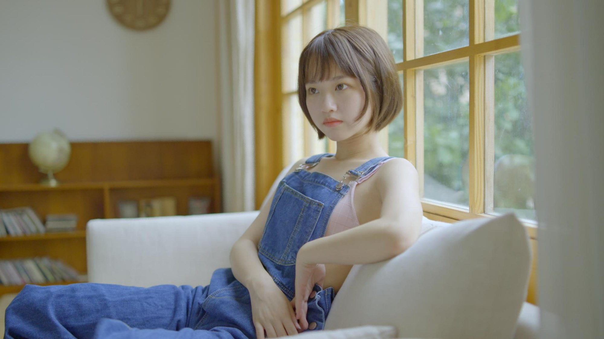

01 / FILM
 9'24"
9'24"
9'24"
灵境 · 闻道
LING JING · WEN DAOAIGC 科幻短片9'24"导演
外星高级文明阻止人类进行探寻宇宙终极真理的危险实验后，以丁仪为首的顶尖科学家们甘愿用生命作为代价向外星人换取真理，上演了一场「朝闻道，夕死可矣」的壮丽殉道。
从分镜、拍摄到调色交付，我把片子从头跟到尾——也愿意从片场最细的那件事做起。
七件作品，从 10 分钟科幻短片
到 70 集 AI 短剧、AI 角色短片与品牌广告。
9'24"
外星高级文明阻止人类进行探寻宇宙终极真理的危险实验后，以丁仪为首的顶尖科学家们甘愿用生命作为代价向外星人换取真理，上演了一场「朝闻道，夕死可矣」的壮丽殉道。
 70 EP
70 EP
玄幻题材 AI 短剧，全 70 集。负责分镜生成、镜头连贯性控制与素材批量产出，在统一美术风格的前提下保证剧集稳定更新，并完成与后期的素材交接。
 0'37"
0'37"
一组 AI 影像生成的训练片段。同一个镜头反复改写提示词，比对文生视频、图生视频与首尾帧衔接的差别，找出哪些描述能稳定复现想要的画面——这批测试构成了后面的工作方法。
 0'52"
0'52"
以「雪王」为主角的 AI 生成短片。角色要在多场景、多动作里保持形象统一，是全套训练中最考验角色一致性和提示词控制力的一次，也积累了一套可复用的角色锁定方法。
 1'05"
1'05"
城市漫游 VLOG 及其拍摄花絮。从踩点、设备检查到运镜与收音，完整走了一遍外拍现场的执行流程，也把「准备阶段不出错」变成了习惯。
 1'10"
1'10"
以产品诉求为核心的品牌短片。实拍阶段负责机位设计与现场执行，用高饱和色块和轻喜剧表演完成节奏明快的产品表达，成片可直接投放。
 GRADE
GRADE
从 Log 到成片的调色实践。先统一曝光与白平衡，再用分离色调建立冷暖关系，最后用局部窗口压出人物与环境的层次——一帧画面的第二次生命。
拖动中间的滑块，
看同一帧的调色前后。

BEFORE / LOG
AFTER / GRADE
调色不是套一个滤镜。同一段素材，我会先把曝光和白平衡拉回中性，再决定这支片子该有什么情绪——暖一点，还是冷一点；高光留白，还是压暗。

「先把该做的做对，
再想怎么拍得好看。」
2026 届数字媒体艺术专业毕业生。系统学习过影视拍摄与后期，具备导演意识与影像叙事能力，擅长镜头语言、画面构图和节奏把控。
在两家文化传媒公司做过 AIGC 影视短片设计，从分镜、生成、筛选到剪辑交付跑完整条链路——也因此习惯了用清单管理素材、用参数记录结果，让每一版都能追溯、能复用。
我愿意在片场从执行层做起：设备检查、场地布置、物料确认、拍摄清单核对，这些不出彩但不能出错的环节，我做得来；灯光、运镜、场记、收音，我也都能补位。
如果你在找一个人，能扛设备、能对清单、也能把 AI 素材接进片子里的助理——我们可以聊聊。

扫码观看完整作品集
百度网盘 · 全部影片与剧照
pan.baidu.com/s/1KwpzBXk0fYN1aBARDE2xwQ 密码 1234